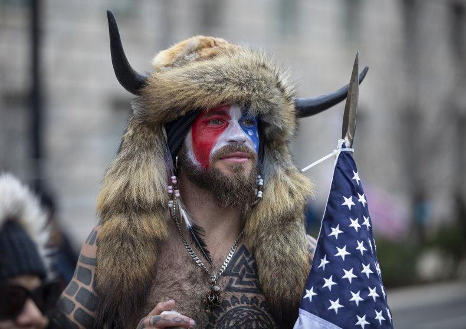
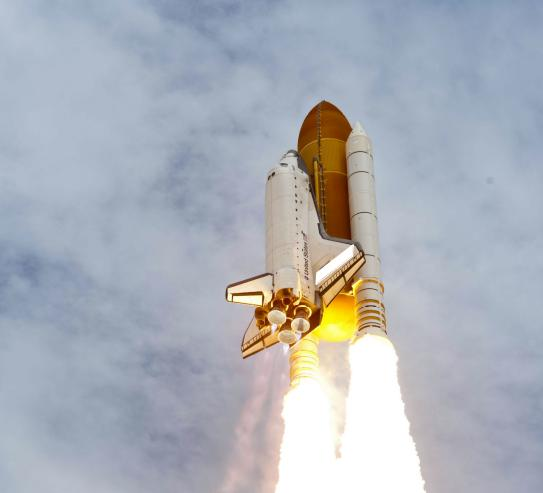
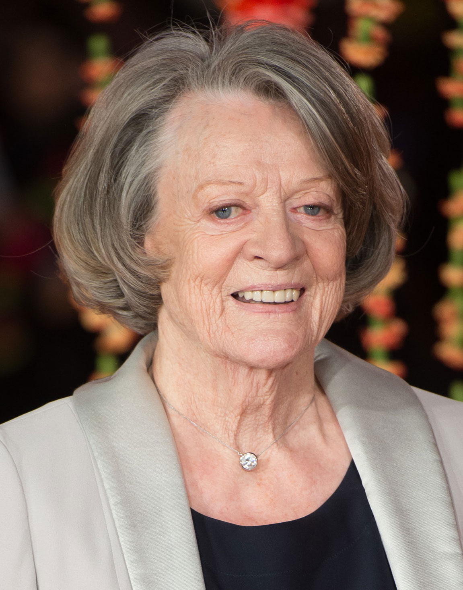
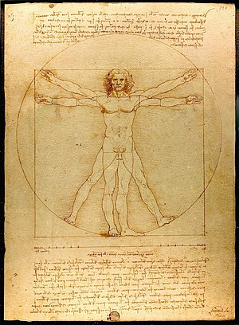
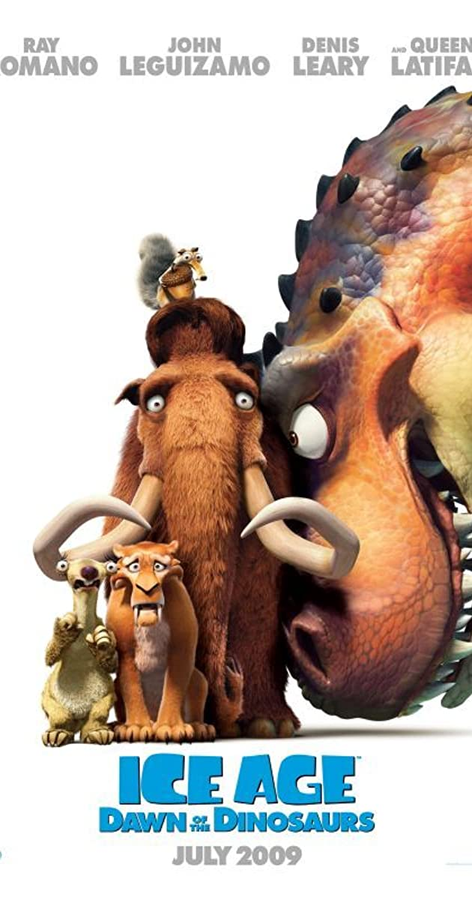

Round 0: In The News (Questions)
0.0 (The last Hour)
0.1 (The Last Day)
0.2 (The Last Week)
Amidst all the overwhelmingly good news coming out of the world’s response to the Covid-19 pandemic, which country has caused controversy this week by banning the use of AstraZeneca’s Covid-19 vaccine on over-65 year olds?
0.3 (The Last Month)
Jacob Anthony Chansley, pictured here, who also goes by the names Jake Angeli, the QAnon Shaman, and the Yellowstone Wolf, was arrested for his infamous role in the siege of the US Capitol on the 6th of January 2021. He subsequently was reported to have gone on hunger strike in his prison, but what reason did he give for his hunger strike?

0.4 (The Last Year)
After unsuccessful attempts to reach the position in previous years, which group succeeded in becoming the UK’s Christmas No. 1 in December 2020?
0.5 (The Last Decade)
On the 30th of May 2020, a Falcon 9 Rocket flew astronauts Bob Behnken and Doug Hurley to the International Space Station, the first time astronauts to have flown to space from the USA since the retirement of the Space Shuttle in 2011, which also carried the astronaut Doug Hurley. This Space Shuttle, the last ever flown, followed Space Shuttles Enterprise, Columbia, Challenger, Discovery, and Endeavour. With which popular 2001 animated children's film does it share a name?

0.6 (The Last Century)
Order these five icons of the last century in order of their date of birth: Maggie Smith, Marilyn Monroe, Whitney Houston, Carrie Fisher, Audrey Hepburn.


0.7 (The Last Millenium)
Leonardo Da Vinci composed the Vitruvian Man before the Mona Lisa. The years of completion for both paintings have the first digit 1. Give the second digits of both of those years (hint: they are distinct).

0.8 (The Last Million Years)
It was revealed in the groundbreaking documentary Ice Age III: Dawn of the Dinosaurs that species of dinosaur such as ankylosaurus and Tyrannosaurus Rex lived contemporaneously with humans, as well as a dastardly trio of mammals who captured our hearts. Of these three central mammal characters, name the character whose species (in the real world) went extinct first?

0.9 (The Last Billion Years)
Another well known historical source, the Bible, is widely reported to hold that of the last billion years, only six thousand existed. Across the first three days of creation, God produced such hits as light, the sky, dry land, the sea, plants and trees. Name one object God created on the fourth day.